Se as fontes abertas (OSINT) constituem a camada inicial e mais acessível da investigação criminal, as pesquisas em bancos de dados oficiais e restritos repre sentam o passo seguinte dentro dos meios ordinários de apuração utilizados pela Polícia Federal. Esses bancos concentram informações de caráter administrativo, cadastral, financeiro ou operacional, muitas vezes sob gestão de órgãos públicos e acessíveis mediante convênios ou autorizações internas, não dependendo de prévia autorização judicial.
A utilização de bancos de dados é essencial para validar hipóteses levantadas em OSINT, aprofundar a apuração de vínculos e patrimônios e fornecer lastro probatório mais robusto às diligências investigativas. Trata-se de um recurso que confere maior precisão, amplitude e confiabilidade, uma vez que a informação é extraída diretamente de registros oficiais.
A doutrina nacional reconhece os bancos de dados como instrumentos de inteligência e de persecução criminal, desde que empregados com respeito aos limites legais, às normas de sigilo administrativo e às garantias constitucionais. O investigador deve ter clareza de que a simples consulta não pode ser confundida com quebra de sigilo — instituto reservado a medidas cautelares judiciais —, mas sim como exploração de bases cujo acesso institucional é legitimado por lei ou convênio.
Nesse contexto, as pesquisas em bancos de dados cumprem três funções principais:
Corroboração de indícios levantados em fontes abertas, assegurando maior confiabilidade à narrativa investigativa;
Ampliação da abrangência informativa, permitindo acesso a dados cadastrais, registros financeiros e patrimoniais não disponíveis ao público;
Preparação para medidas extraordinárias, ao fornecer elementos suficientes para justificar pedidos de quebra de sigilo ou cooperação com outros órgãos.
Assim, os bancos de dados podem funcionar como elo intermediário no ciclo investigativo: após a coleta inicial em fontes abertas, oferecem a robustez necessária para a consolidação de hipóteses e fundamentação de medidas mais intrusivas, preservando a proporcionalidade e a legalidade da atuação policial.
A Polícia Federal dispõe de um amplo conjunto de bancos de dados internos e conveniados, que constituem o núcleo das consultas cadastrais e patrimoniais utilizadas em investigações criminais, administrativas e de inteligência.
Esses bancos classificam-se, em geral, em internos, mantidos pela própria instituição, e conveniados (externos), acessados por meio de acordos de coope ração técnica com outros órgãos públicos.
O uso combinado dessas bases permite validar e cruzar informações obtidas em fontes abertas (OSINT) ou em diligências preliminares, conferindo maior precisão, confiabilidade e robustez às hipóteses investigativas. Essas informações são essenciais para a identificação de vínculos e para a gestão integrada das investigações, fortalecendo a capacidade analítica e o embasamento técnico das ações policiais.
Nos subitens a seguir, serão apresentados os principais tipos de bancos de dados utilizados pela Polícia Federal, exemplificativamente, suas aplicações práticas no contexto investigativo e as boas práticas para garantir a rastreabilidade e a legitimidade das informações extraídas.
Referem-se a sistemas de outros órgãos públicos ou entidades privadas acessíveis à Polícia Federal por meio de convênios, acordos de cooperação ou integração sistêmica. Normalmente trazem informações cadastrais, fiscais, trabalhistas ou patrimoniais, que não estão disponíveis em fontes abertas, mas que podem ser consultadas para fins investigativos.
Fornecem informações sobre pessoas físicas, jurídicas, patrimônio, vínculos econômicos e registros administrativos relevantes para investigações. Alguns exemplos incluem:
(Senasp) que permite a consulta de informações sobre indivíduos
(dados criminais), veículos, armas, condutores de veículos, pessoa
física e jurídica da base da Receita Federal, Interpol, mandados de
prisão (BNMP/CNJ), boletins de ocorrências, etc.
Reúnem informações de caráter sensível, mas indispensáveis em investigações de corrupção, crimes financeiros e lavagem de dinheiro. Exemplos:
São sistemas próprios da instituição, criados para gestão de atividades admi nistrativas e operacionais, mas que também servem de apoio às investigações criminais.
Englobam sistemas utilizados para finalidades administrativas da Polícia Federal, mas que também podem ser úteis em investigações. Exemplos incluem:
| SISMIGRA | Nome | SISMIGRA - Sistema de Registro Nacional Migratório |
|---|---|---|
| Finalidade | Gerenciar as autorizações de residência e regula rizações migratórias | |
| Informações | Situação migratória atual de estrangeiros no Brasil | |
| Público-alvo | Gerido por perfis. Servidores e colaboradores | |
| SINARM | Nome | SINARM - Sistema Nacional de Armas |
| Finalidade | Permite consulta aos dados sobre armas de fogo, inclusive dados pessoais dos proprietários de armas. O acesso é realizado pelo Sistema CGTI. Não acessa os dados do SIGMA. | |
| Informações | Dados sobre armas de fogo e dados pessoais dos proprietários de armas. | |
| Público-alvo | Gerido por perfis. Servidores e colaboradores | |
| SINPA SINPA CON | Nome | SINPA - Sistema Nacional de Passaporte |
| Finalidade | Emissão de passaportes (SINPA Desktop). Consulta de Passaporte (SINPA CON) | |
| Informações | SINPA CON: Dados cadastrais, endereço, fotogra fia, telefone, responsáveis (menores). | |
| Público-alvo | Gerido por perfis. Restrito a servidores lotados e terceirizados. Geral para consultas (SINPA CON). |
| PF-CATÁLOGO | Nome | Catálogo de Sistemas |
|---|---|---|
| Finalidade | Portal com interface para mais de 40 (quarenta) sistemas da PF. | |
| Observações | Os acessos a cada um dos sistemas disponibilizados no Catálogo dependem do nível de permissão do usuário, conforme necessidade, área de trabalho e qualificação formal. | |
| Público-alvo | Servidores e colaboradores. |
Esses bancos de dados permitem identificar vínculos documentais e patrimoniais que complementam muitas vezes hipóteses investigativas.
Além dos bancos administrativos e cadastrais, a Polícia Federal também se vale de bancos de dados especificamente voltados à atividade criminal e opera cional, os quais constituem instrumentos centrais para a persecução penal. Essas bases registram procedimentos, ocorrências, medidas cautelares em andamento, vínculos, entre outros, permitindo ao investigador uma visão integrada da situação criminal do alvo e garantindo maior efetividade na execução das diligências. Entre os principais exemplos de sistemas criminais e operacionais, destacam-se:
| NEXO | Nome | NEXO |
|---|---|---|
| Finalidade | Sistema de pesquisas que reúne bancos de dados da Polícia Federal e de outros órgãos. | |
| Informações | Permite pesquisas com ou sem filtros, geração de dossiês integrados com informações de várias fontes e gestão das informações produzidas no curso das investigações, especialmente de organizações crimi nosas. Bastante eficiente para localização de pessoas. | |
| Público-alvo | Servidores que trabalham na área de investigação e inteligência. | |
| SINAPSE | Nome | SINAPSE |
| Finalidade | Trata-se de um mecanismo de busca textual, nos moldes das ferramentas Google e Yahoo. | |
| Informações | Permite a busca em diversos bancos de dados da Polícia Federal, bancos de dados públicos e banco de dados de órgãos conveniados. | |
| Público-alvo | Servidores que trabalham na área de investigação e inteligência. |
| SIS-2 | Nome | SIS-2 |
|---|---|---|
| Finalidade | Sistema de Interceptação de Sinais 2.0, é o sistema oficial de interceptação de sinais da Polícia Federal. | |
| Informações | Permite a interceptação de dados tele m á t i c o s e t e l e f ô n i c o s , a p r e s e n t a n d o diversas funcionalidades úteis no curso das investi gações. | |
| Público-alvo | Servidores, mediante conclusão de curso específico. | |
| e-POL | Nome | e-POL |
| Finalidade | Sistema de polícia judiciária da PF | |
| Observações | Controle de procedimentos policiais, gestão e geração de documentos e tarefas policiais. Pelo e-POL, é possível acompanhar as várias fases da investigação policial, realizar pesquisas, produzir peças e analisar casos. | |
| Público-alvo | Servidores. | |
| RAPINA | Nome | e-POL |
| Finalidade | Sistema de polícia judiciária da PF | |
| Observações | Controle de procedimentos policiais, gestão e geração de documentos e tarefas policiais. Pelo e-POL, é possível acompanhar as várias fases da investigação policial, realizar pesquisas, produzir peças e analisar casos. | |
| Público-alvo | Servidores. | |
| TENTÁCULOS | Nome | TENTÁCULOS |
| Finalidade | É uma plataforma tecnológica corporativa, criada para armazenamento, análise, correlação de informações sobre fraudes bancárias eletrônicas e golpes digitais. | |
| Observações | Produção de investigações relacionadas às fraudes bancárias eletrônicas e golpes digitais. | |
| Público-alvo | Servidores, mediante conclusão de curso específico. |
Assim, os bancos criminais e operacionais representam a camada mais diretamente vinculada à persecução penal, fornecendo insumos indispensáveis para localização de alvos, cumprimento de medidas judiciais e integração das investigações no âmbito nacional.
Vivemos em uma era em que decisões públicas, corporativas e de segurança se baseiam em dados. Cada registro administrativo, transação ou cadastro gera informações que, quando analisadas de forma estruturada, revelam padrões, tendências e relações. Nesse cenário, surge o Business Intelligence (BI) — o conjunto de métodos e ferramentas que transforma dados em informação e informação em conhecimento.
No contexto policial, essa transformação é ainda mais relevante: dados brutos, quando organizados e visualizados corretamente, evidenciam vínculos, comporta mentos e indícios, apoiando a tomada de decisão investigativa e administrativa.
O BI Policial aplica os mesmos princípios do BI corporativo ao ambiente investigativo. Enquanto empresas utilizam BI para desempenho e eficiência, a PF o emprega para qualificar a prova e otimizar o uso de dados cadastrais, patrimoniais e operacionais.
Com ferramentas de análise, o policial pode:
Essas análises permitem enxergar o conjunto informacional integradamente, acelerando a investigação e aumentando a precisão das conclusões.
O Qlik Sense é uma das principais ferramentas de BI utilizadas pela PF. Ele permite carregar, relacionar e visualizar dados em painéis interativos (tabelas, gráficos e mapas).
Seu diferencial é o modelo associativo, que utiliza três estados para indicar o relacionamento dos dados:
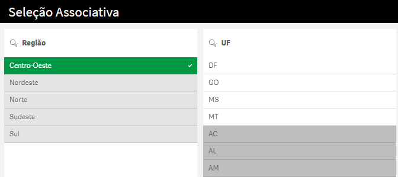
Essa dinâmica favorece a descoberta de conexões e amplia a percepção sobre o conjunto analisado. O Qlik Sense possui duas versões:
(web);
O Qlik Sense é organizado em três elementos principais:
Cada aplicativo representa um tema ou conjunto de análises (ex.:
“Ciaf bancário”, “Ciaf cadastral”).
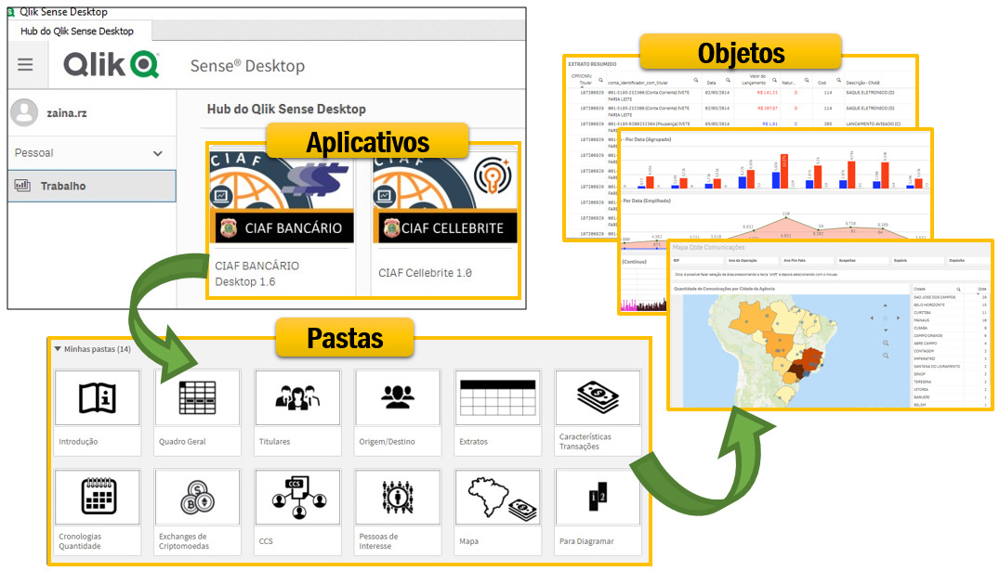
As pastas podem ser públicas (visíveis a todos) ou privadas (visíveis somente ao criador). Os objetos representam a camada visual dos dados — o ponto de contato entre o analista e a informação.
Cada aplicativo do Qlik Sense é projetado para analisar um conjunto específico de dados.
Antes de chegar às visualizações que o usuário enxerga nos painéis, esses dados passam por um processo de tratamento e modelagem, desenvolvido pelo criador do aplicativo. Esse processo visa organizar, padronizar e conectar as informações, permitindo que diferentes tabelas, como pessoas, empresas, vínculos e bens, se relacionem coerentemente.
Após essa etapa, os dados tratados são carregados nos objetos visuais (grá ficos, tabelas, mapas, indicadores), onde o policial pode interagir e interpretar os resultados.
Esse fluxo representa a base de funcionamento de qualquer aplicativo do Qlik Sense: os dados brutos passam por modelagem e tratamento, são carregados, e então se tornam informação visual e acionável.
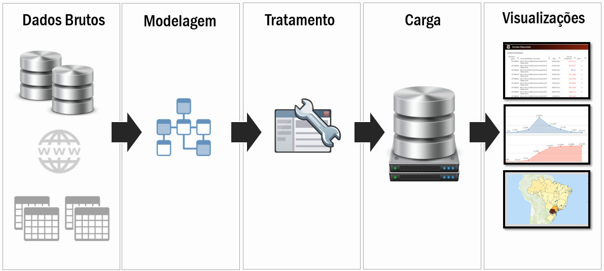
No Qlik Sense, o conceito de conexão e carga de dados define como o aplicativo se comunica com os arquivos originais. Cada aplicativo é configurado para carregar os dados salvos em uma pasta padrão, garantindo organização e reprodutibilidade.
Para efeito didático, convencionaremos que todas as pastas padrão ficarão no diretório: “C:\CIAF”
Cada aplicativo possui sua pasta própria para armazenar os arquivos brutos que serão carregados. Por exemplo, o aplicativo Ciaf cadastral está configurado para ler os dados da pasta: “C:\CIAF\DADOS CIAF CADASTRAL”.
Quando os dados são carregados no Qlik Sense desktop, eles passam a ficar salvos no aplicativo (.qvf), permitindo o uso offline e a atualização manual sempre que novos arquivos forem adicionados à pasta padrão.
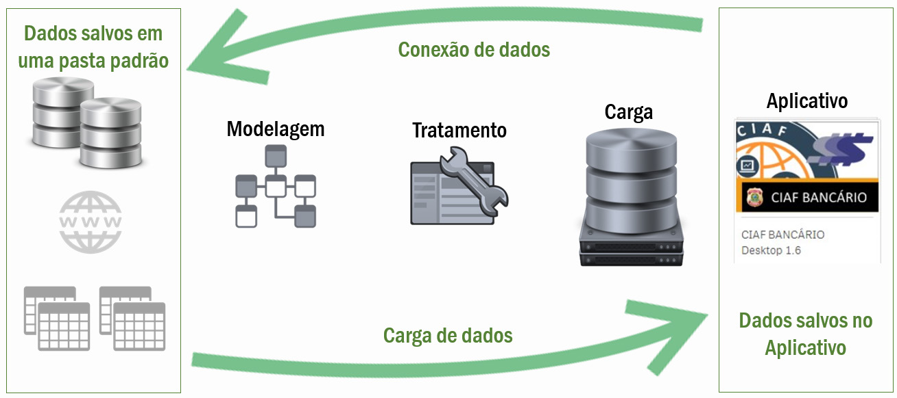
Há dezenas de aplicativos de análise desenvolvidos pela Polícia Federal. Em linhas gerais, cada diretoria tem seus próprios aplicativos de acordo com suas necessidades. Por exemplo, a Coger, responsável pela correição de inquéritos policiais, tem aplicativos que trazem dados estatísticos da quantidade de inquéritos em andamento, por unidade federativa, delegacia etc.
Para efeito didático, usaremos neste curso de formação, aplicativos do Portal do Curso de Investigação e Análise Financeira (Ciaf) da Divisão de Repressão aos Crimes Financeiros da CGRC/Dicor. Esses aplicativos podem ser encontrados no SharePoint institucional, no Portal Ciaf (https://pfgovbr.sharepoint.com/sites/ PortalCIAF), na seção “Qlik Sense”.
Passo a passo para instalação:
“Documentos > Qlik > Sense > Extensions”;
Caso seja o primeiro acesso ao Qlik Sense Desktop, o servidor policial deve se autenticar previamente ao QlikSense Enterprise da PF:
O Qlik Sense é uma ferramenta interativa: cada clique gera uma nova visão dos dados. Seleções As seleções podem ser feitas clicando diretamente sobre os valores de um gráfico, tabela ou filtro. É possível selecionar múltiplos valores clicando com o mouse. O item selecionado fica verde; Os itens associados permanecem brancos; Os itens sem relação tornam-se cinza.
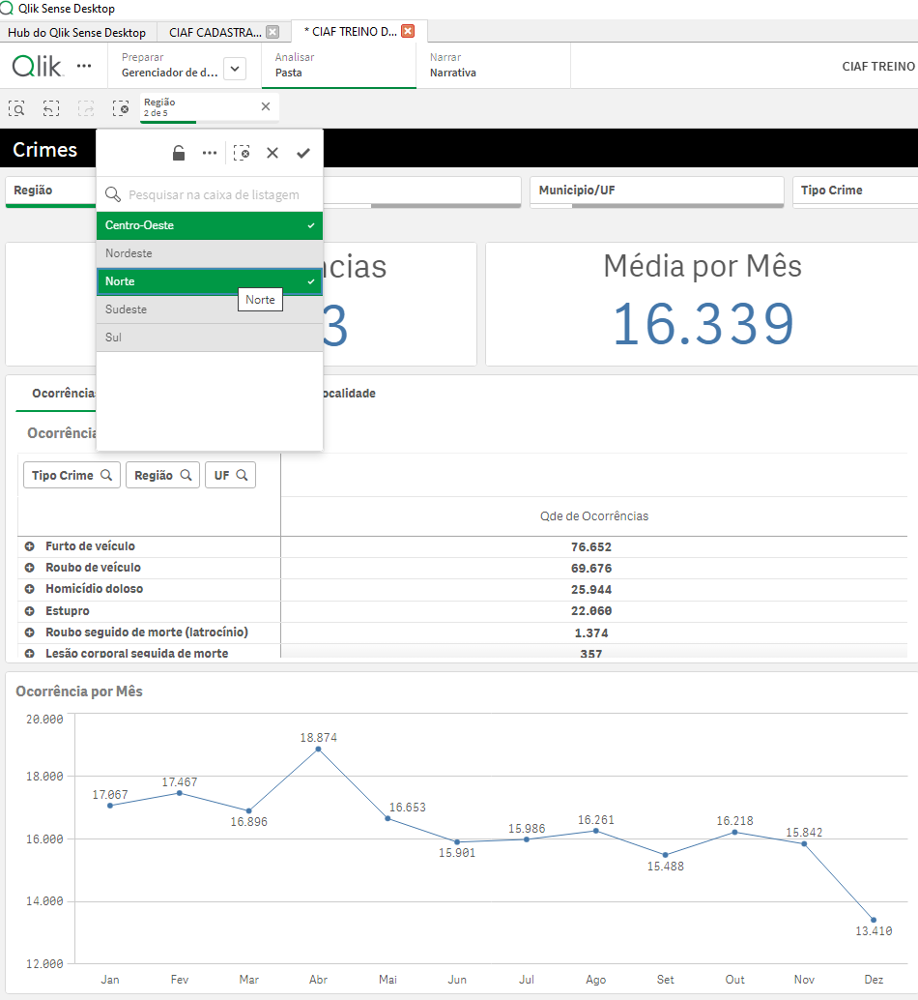
Trava de Filtro Após definir um conjunto de seleções, clique no ícone de cadeado para travar o filtro e evitar alterações acidentais. Para destravar, clique novamente no ícone.
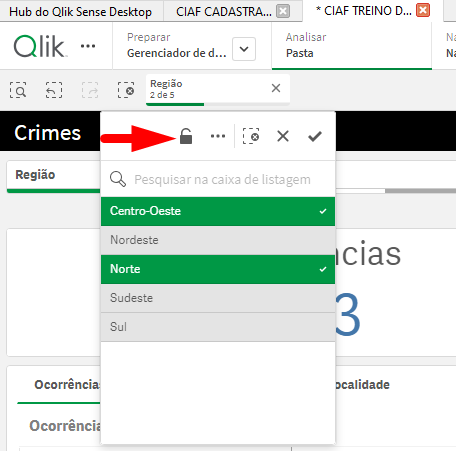
Marcadores Os marcadores permitem salvar estados específicos de seleção (ex.: um conjunto de filtros aplicados). Para criar um marcador: Clique em Marcadores Criar novo; Dê um nome e salve. O marcador pode ser reutilizado a qualquer momento para retornar ao mesmo estado de análise.
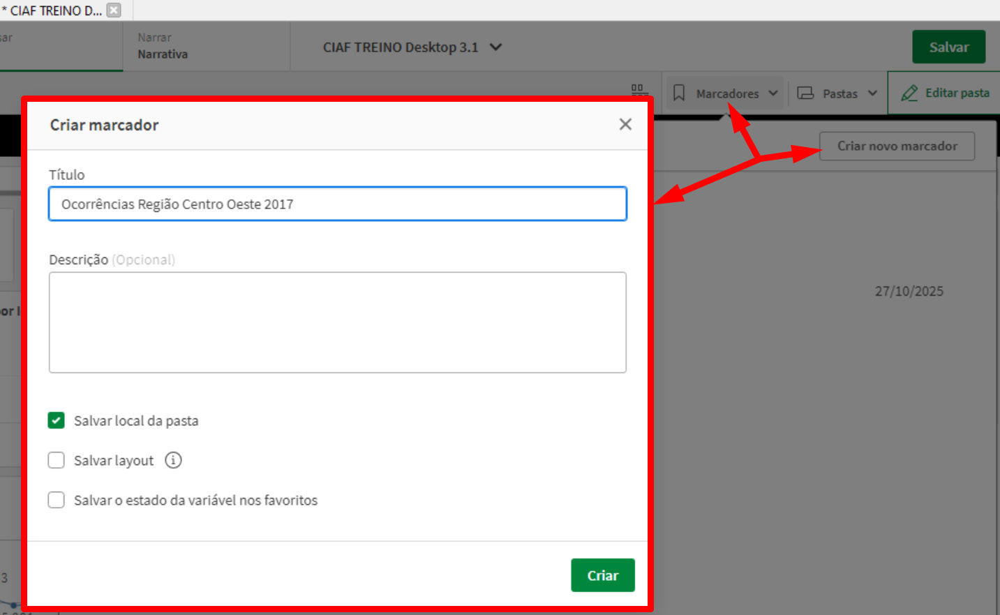
Mudança de Pastas e Dinâmica Associativa
O Qlik Sense funciona globalmente: as seleções feitas em uma pasta afetam todas as outras. Assim, se você filtrar por um CPF ou CNPJ em uma pasta, os resultados de todas as visualizações do aplicativo serão atualizados automatica mente. Essa dinâmica associativa é o principal diferencial da ferramenta.
Também é possível abrir o mesmo aplicativo em duas janelas diferentes do Qlik Sense, aplicando seleções em uma e observando os efeitos na outra. Esse recurso é especialmente útil para realizar comparações simultâneas entre conjuntos de dados ou análises distintas.
Para fazer isso, abra o mesmo aplicativo duas vezes por meio do Hub. Ele será exibido como duas abas no navegador integrado do Qlik Sense. Em seguida, clique e segure uma das abas, arrastando-a para fora da janela principal para destacá-la e movê-la para outra tela ou monitor. Assim, você poderá acompanhar ambas as visualizações lado a lado, facilitando a análise comparativa.
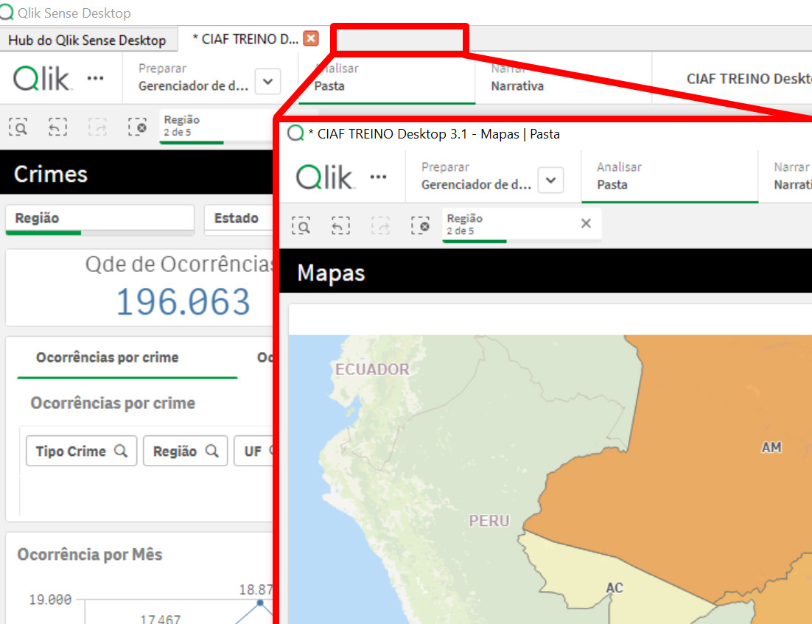
Dicas Práticas de Uso
O uso do Qlik Sense no ambiente policial não se limita a manipular dados: ele representa uma verdadeira mudança de paradigma na forma de compreender a informação. Por meio do Business Intelligence, a investigação deixa de depender exclusivamente de relatórios estáticos, orientada por dados, permitindo análises dinâmicas, comparativas e visualmente intuitivas.
Para aprofundar o aprendizado, recomenda-se consultar o portal oficial de suporte e treinamento do Qlik Sense, que oferece guias, exemplos e tutoriais práticos sobre uso, criação de aplicativos, visualizações e boas práticas:
https://help.qlik.com/pt-BR/
Esse repositório é constantemente atualizado e serve como fonte de referência para usuários iniciantes e avançados, complementando o conteúdo apresentado neste material.
Conforme tratado no módulo I, o Programa de Tratamento Especial para Casuísticas Repetitivas - Prometheus aplica uma metodologia especial para inves tigações que envolvam as casuísticas previstas no programa. Essa metodologia, focada primariamente nas notícias-crime, mas que também se aplica a inquéritos em andamento, se baseia em três etapas:
Como já visto, a etapa de estruturação de dados se dá por meio do preen chimento de um formulário no software denominado “Formulários Prometheus”:
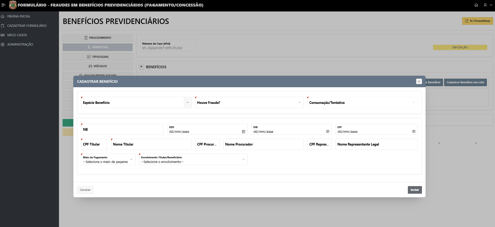
Figura 1 - Exemplo de cadastro de uma notícia-crime de fraude na concessão de be
nefício previdenciário.
A etapa de análise é essencial para subsidiar a tomada de decisão e se vale de ferramentas específicas desenvolvidas no âmbito do programa, bem como nas demais fontes de dados disponíveis na PF. Os objetivos elencados pelo artigo 8º da Portaria 19.022 para nortear essa análise, de forma a subsidiar a tomada de decisão, são:
Art. 8º O delegado responsável determinará a elaboração de
IPJ, após o preenchimento do formulário, devendo o policial
designado realizar análise utilizando ferramentas tecnológicas
desenvolvidas no âmbito do Prometheus, bem como as demais
ferramentas investigativas disponíveis na Polícia Federal, com
o objetivo de:
I - Identificar possível atuação de associações e organizações
criminosas;
II - Identificar padrões ou repetições de dados que indiquem re
lacionamento dos fatos sob análise com outros fatos criminosos,
já investigados pela Polícia Federal ou não, ou com outras NCs;
III - identificar linhas investigativas viáveis ou a sua ausência;
IV - Identificar eventuais elementos que podem impedir a mani
festação pelo arquivamento da NCV, nos termos do art. 10; e
V - Identificar outras circunstâncias julgadas úteis para a análise
dos fatos.
Para permitir o cruzamento de dados e o atingimento dos objetivos supracita dos, a Polícia Federal celebra Acordos de Cooperação Técnica (ACT) com órgãos parceiros, para obter dados adicionais que auxiliem na identificação de crimes e a expandir a análise para além dos dados estruturados por meio do software de registro e estruturação de dados da notícia-crime.
A título de exemplo, por meio de ACT com os Correios, é possível identificar se determinado destinatário de um objeto postal contendo drogas já foi destina tário de outras encomendas apreendidas com drogas, ainda que estas tenham sido encaminhadas para a Polícia Civil (hipótese na qual os dados não estariam disponíveis para a PF diretamente).
Ou seja, essa integração das bases de dados dos formulários do Prometheus, com outras bases de dados da Polícia Federal e de órgãos parceiros configura um enriquecimento de dados que confere uma capacidade ampliada para os processos do Prometheus em relação à mera utilização dos dados presentes nos autos como base para a análise.
De fato, em algumas casuísticas do Prometheus, há ferramentas que permitem até mesmo a prospecção de novos casos a partir das bases de dados, como, por exemplo, os aplicativos de moeda falsa ou de fraudes no benefício de prestação continuada ao idoso (BPC LOAS).
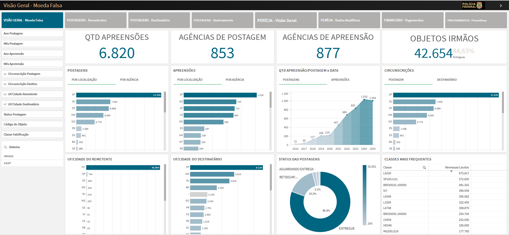
Figura 2 - Pasta “Visão Geral” do aplicativo de análise de falsificação de moeda.
Dessa maneira, as ferramentas do Prometheus podem servir para subsidiar a análise prévia à instauração de uma investigação, para apoiar investigações em andamento, ou para a descoberta prospectiva de organizações criminosas ou crimes de maior vulto.
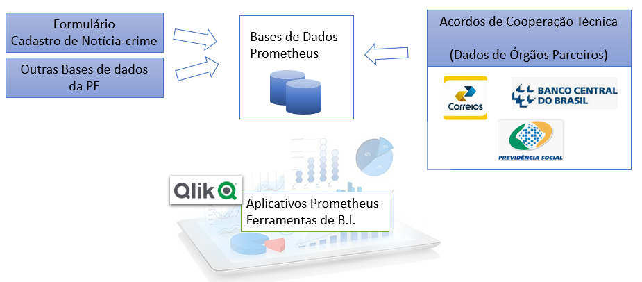
Figura 3 - Fontes de dados das ferramentas de análise do Prometheus.
Atualmente, o Prometheus conta com as seguintes ferramentas de análise desenvolvidas no Qlik Sense, ferramenta de business intelligence (BI), publicadas, que as quais podem ser acessadas no fluxo “Prometheus” em https://bi.pf.gov. br. São elas:
(idosos);
Importante destacar o aplicativo de BI “Prometheus – Formulários”, que é a ferramenta residual de análise para casuísticas que ainda não possuem aplicativo específico desenvolvido. Esse aplicativo não se confunde com o software de regis tro, indexação e estruturação de dados denominado “Formulários Prometheus”, mas possui íntima relação com ele: o BI é uma ferramenta de consulta dos dados de todos os formulários preenchidos no software.
Cada ferramenta de análise tem suas especificidades em relação a técnicas próprias de exploração de dados, baseando-se nos processos de filtragem e seleção do Qlik Sense para a obtenção de insights e descoberta de elementos de interesse.
Assim, as ferramentas de análise do Prometheus constituem uma fonte impor tante, passível de aproveitamento em inquéritos policiais1, para as atividades de pesquisas em bancos de dados.
As pesquisas em bancos de dados oficiais representam o elo intermediário do ciclo investigativo, conferindo maior solidez às hipóteses levantadas em OSINT e fornecendo lastro probatório mais consistente ao inquérito policial. Trata-se de recurso de precisão e confiabilidade elevada, visto que extrai informações diretamente de registros administrativos e institucionais.
O uso desses sistemas deve, entretanto, observar rigorosamente os limites legais e institucionais, distinguindo a consulta legítima das medidas de quebra de sigilo, reservadas exclusivamente ao crivo judicial. A formalização da diligência e o registro adequado dos acessos asseguram a legitimidade do material produzido e sua rastreabilidade.
Nesse sentido, os bancos de dados funcionam como ponte entre os indícios obtidos em fontes abertas e a fundamentação de medidas extraordinárias. Permitem ao policial consolidar hipóteses, ampliar o alcance informativo e sustentar dili gências mais intrusivas, sempre em consonância com os princípios da legalidade e da proporcionalidade.